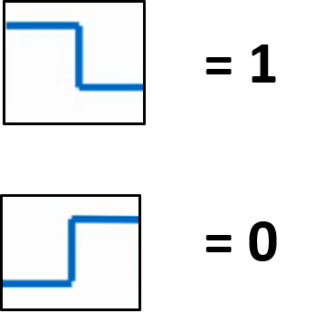
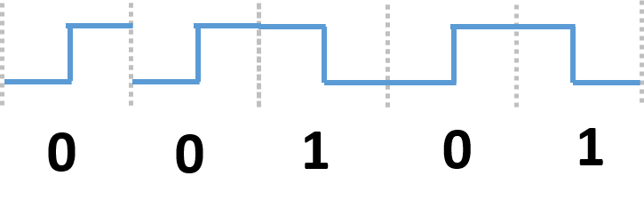
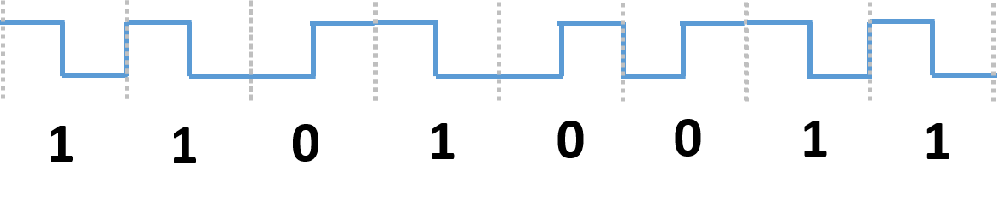
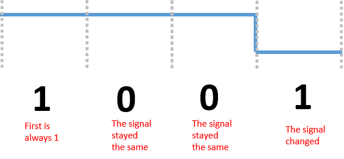
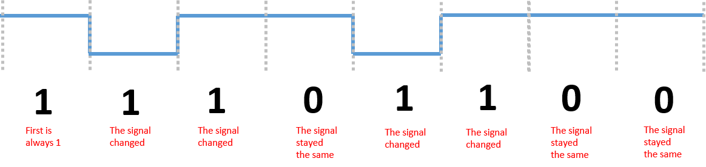

This is one of the many methods of Data Transmission.
For our studies, the types of data transmission we are interested in is transitioning from 'digital data' to 'digital signal'.
We will explore two different ways to do this type of conversion:
We look at the transitions of the Manchester Wave. The direction of the transition is what decides the binary value.
So by this logic, we can re-translate any Manchester Wave back into its original binary pretty easily...
Example 1
Example 2
We can condense how NRZI works into two simple conditionals:
if (v stays the same) {
put 0
} else if (v stayed the same) {
put 1
}
So we are essentially inverting on 1, hence the name NRZI.
Example 1
Example 2
